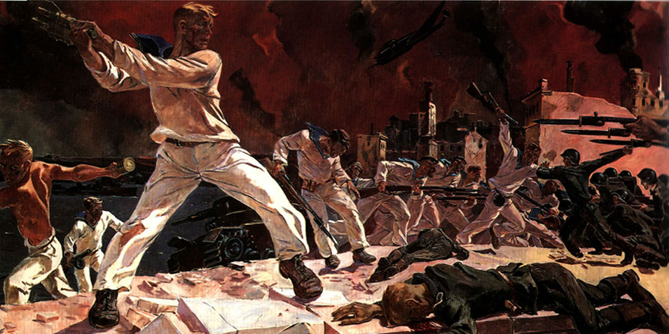

Переучреждение России
Примеры нацдемов вида «живут же другие народы в разделенном положении, да и русские не вымерли же сейчас, хотя тоже разделены» в качестве аргументации «давайте разделим Россию на кусочки» не проходят, за редким исключением все либо крутят пальцем у виска, либо матерятся. Но вот Крылова осенило, он нашел типа правильный пример. Пост от 17/07/2011 «Независимость и переучреждение»:
«Вот читаю в ленте всякие "поздравления с днём независимости Сибири". Цитируют — в качестве "сепаратистского документа" — Декларацию Временного Сибирского правительства от 7 июля (или 4 июля по старому стилю) 1918 г «О государственной самостоятельности Сибири».
Я в кои-то веки решил поинтересоваться, а что там, собственно, было написано. …
Но это не сепаратистский документ. Вовсе даже.
Необходимость создания сибирского государства обосновывается ТОЛЬКО тем обстоятельством, что российская государственность кончилась — территория частично завоёвана, частично находится под антироссийским и антирусским игом. «Сохранять верность» просто НЕЧЕМУ. Но это и всё: ни о каких «столетиях притеснений сибирского народа» даже и речи не идёт.
А дальше ясно сказано, что целью сибирских властей является не построение независимого государства, отдельного от России, а воссоздание российской государственности. После очищения Европейской России от интервентов и большевиков нужно будет с ней воссоединиться, что и будет сделано законным путём — то есть совместной работой законодательных собраний будущей России и Сибири, которые и «оформят отношения». …
И здесь закладывается совершенно определённая модель переучреждения России — через союз регионов, легитимность власти над которыми основана на победе над большевиками и интервентами, то есть новая Россия как союз земель-победительниц в Гражданской войне. А что, вполне возможный был бы вариант. С выходом на структуру наподобие Соединённых Штатов. …
Так что над тем, каким способом переучреждать Россию, надо ещё думать. И думать уже сейчас, ибо».
slovenorus14: Но ведь это и есть самая настоящая русофобская широпаевщина. С какой это стати ЕДИНАЯ Русская Нация должна представлять из себя «семь "русских" республик» или ещё какой-то там «союз регионов». Ведь это неизбежно приведёт к обособлению этих самых «русских» республик, подавлению Русского самосознания и насаждению всяких «национальностей» «сибиряков», просто потому, что местные «элиты», дорвавшись до власти, попытаются сделать всё, чтобы никогда уже не допустить восстановления Русского государства.
Так что, существует только один вариант «переучреждения» России — это создание ЕДИНОГО, ЦЕНТРАЛИЗОВАННОГО Русского Национального, социалистического государства — России, которая должна объединить ВСЕ Русские земли (и земли коренных народов) под единой централизованной национальной властью, в том числе и Русскую Сибирь (без всяких там «сибирских республик» и прочей «самостоятельности»).
Единая Нация — Единое, централизованное Национальное государство. Только так!
P.S. Автор этого сообщения — коренной сибиряк (не по «национальности», а по месту жительства), Русский сибиряк, НС, ненавидящий сибирский сепаратизм во всех его проявлениях.
Antimarchenk: А еще меня некоторые блогеры, поклонники Крылова, пытались убедить, что Крылов и Широпаев ничего общего между собой не имеют. Вот как раз подтверждение моему тезису, что нацдемы — одного поля ягоды все. У них общий «антиимперский» дискурс и схожие геополитические игрища на развал целостного государства. Причем развал бессмысленный. Все эти вариации — не более, чем попытка внушать раскол там, где его и нет. Нет никакого желания у русских Сибири отделяться от России. В этом нет никакого политического смысла.
Зачем геополитически расчленять государство, когда нужно всего лишь сменить правящий ныне антинациональный режим. Зачем городить тень на плетень?
И не надо оправдываться — мол, посмотрите, про какой год идет речь. И, мол, это гипотетика про прошлое. Мы ж не учебник истории читаем, а ЖЖ современника. Ведь он в конце намекает нам на «модель».
Уже не впервой слушать бредни «про конфедерацию». Когда не говорят о других исторических конфедерациях и чем они реально заканчивались. И в чем была их проблема сначала.
Почему нам Крылов не расскажет, чем закончилась Конфедерация в США? Гражданской войной — самой кровавой за историю этих самых США. Сейчас США — федеративное государство.
Чем закончилась конфедерация (таможенный союз) в Германии в 19 веке? Империей.
Конфедерацию швейцарских кантонов взять для примера? Ну как-то несоразмерно, согласитесь.
И, кстати, эти колонии американские, раз уже отделившись от Великобритании, уже так никогда и не стали вновь ее частью. Стали другими, независимыми государствами.
То есть Крылов за развал России. Ломать — не строить.
Зачем, повторюсь, одному народу несколько своих государств?
Volgota: Абсолютно согласен, причем именно как сибирский националист считаю, что данная декларация абсолютно прорусская, празднуют это только русские, сектанты и идиоты. В сибирском национальном движении развелось проходимцев, готовых врать по любому поводу, в том числе, что СВП были якобы сепаратистами. Они на самом деле были совершенно обратным, а именно были русскими государственниками, и попытки современных псевдосибирских блоггеров из ЖЖ по этому поводу врать — очередная их подлость, только замарывают этим движение. Врать не надо в любом случае.
Достаточно внимательно прочесть цитируемый Крыловым документ:
«Временное Сибирское Правительство полагает также совершенно необходимым объявить не менее торжественно, что оно не считает Сибирь навсегда оторвавшейся от тех территорий, которые в совокупности составляли Державу Российскую, и полагает, что все его усилия должны быть направлены к воссозданию Российской государственности.
Временное Сибирское Правительство полагает, что, по счастливом достижении этой высокой цели, характер дальнейших взаимоотношений между Сибирью и Европейской Россией будет определен Всесибирским и Всероссийским Учредительными Собраниями».
Это ему хочется видеть здесь «а давайте образуем конфередрацию» или что-то типа этого. Написано же четко: ориентация на Державу и на воссоздание государственности, т.е. Сибирская губерния, проще говоря, возвращается в Русскую Империю. Просто в тот момент не было общерусского государства. Как уже не раз писалось, федерация хороша для объединения изначально отдельных стран и т.п., а не для разъединения. Что, ГДР и ФРГ федерацию образовали?
Ну и еще важное на тему от историка, _lord_ пишет:
«Вы делаете неверные выводы из неверных посылов. Этот документ называют сепаратистским не по содержанию. Нужно смотреть историю его появления. Главное и основное в ней — это конфликт двух крупных социалистических партий России — большевиков и эсеров (с примкнувшими к ним меньшевиками).
Большевики за несколько месяцев до Октября сделали ставку на Советы, в то время, как эсеры и меньшевики чуть ранее от ставки на Советы отказались, сосредоточившись на работе в старых, официальных органах — Временном правительстве и местных Думах. Итогом двоевластия накануне Октября были лидирующие позиции большевиков практически во всех Советах по стране, и лидирующие позиции меньшевиков и эсеров в местных Думах.
После Октября, как мы знаем, было объявлено о переходе всей власти в центре и на местах к Советам. Это отнюдь не обрадовало эсеров и меньшевиков. Фактически, их подвинули от власти. У эсеров была дополнительная обида — большевики к тому моменту вобрали в свою программу значительную часть программы эсеров и именно с такой программой на выборах в Советах и побеждали. Т.е. эсеры оказались самыми обиженными — и программу у них похитили (они в этом открыто обвиняли Ленина), и позиций самой большой российской партии лишили.
Так разгорелся чисто партийный конфликт эсеров и большевиков, каждая из партий претендовала на верховную власть в стране. И в Сибири власть первоначально взял Совет. Ему параллельно, правда, было создано первое Временное сибирское правительство (эсеровское, на базе Сибирской думы). А вот второе правительство, о котором и идет сейчас речь, возникло по итогам мятежа Чехословацкого корпуса. Эсеры вновь подсуетились, Советы арестовали и снова создали свое правительство. Вы посмотрите хоть на его партийный состав.
Так вот эсеры и большевики делили власть.
Что касается того, как, на основе чего это эсеровское правительство могло бы "переучредить" Россию. Сравните программы РСДРП(б) и ПСР, сравните декреты Советской власти и декреты, которые фракция эсеров подготовила для принятия Учредительным собранием. Они идентичны.
Ленин, когда эсеры обвиняли его в краже их программы, не даром говорил им в ответ, что они несколько месяцев сидели во Временном правительстве, но отчего-то так и не решились приступить к реализации своей программы. Декрет о земле, принятый 2-м съездом Советов, — эсеровский, но предложили его на голосование большевики. Декрет о мире — эсеровский. Закон о социализации земли — эсеровский.
Просто попав в положение, когда большевики отодвинули их от власти, эсеры не стерпели. Они заявили, что Советы не признают, а признают только Учредительное собрание. И подготовили к принятию им: Декрет о земле, декрет о мире, закон о социализации земли и т.д. То есть все то, что большевики уже приняли в октябре-ноябре. Смысл был только один - пользуясь вывеской Учредительного собрания перехватить власть.
РЕАЛЬНЫХ противоречий между большевиками и эсерами не было. А вот их борьба за власть привела, в частности, к "отделению" Сибири эсеровским правительством».
antipin_sl: Типичная национал-уменьшительность. Вот мы развалим Россию, эх и заживем потом. План Бжезинского в действии, вот небольшой его фрагмент мы здесь и наблюдаем. Ну, разошлись Россия, Украина и Белоруссия по логике нацдемов — это благо. То есть по факту нацдемы хотят ввергнуть Россию в средневековье, в состояние отдельных княжеств, которые с трудом противостояли внешней агрессии. И потом спокойно слить их Западу. Начинаю понимать, чем Сталин в свое время занимался.
Krylov: Я, кстати, постоянно слышу от самых что ни на есть патриотов разные хвалебные слова в адрес Лукашенко, который-де "спас кусочек Советского Союза". Оные прекрасные патриоты всячески желают Лукашенке сидеть на своём троне подольше, и ни в коем случае не вливаться в Россию, которая Белоруссию разорит, ограбит, устроит приватизацию и всячески развратит. Вы, кстати, по этому вопросу какую позицию занимаете?
antipin_sl: Да, это точно, Лукашенко спас кусочек Советского Союза, поэтому сейчас Белоруссия не сможет влиться в Россию. Когда Россия вернется к социализму, пускай и не такому, какой был в 80-х, но все же социализму, тогда, думаю, соединение произойдет естественным образом.
Верно подмечено: русские потому и не хотят прямо сейчас присоединения Белоруссии к эРэФии. Это надо нам к Белоруссии присоединяться.
И снова передергивание: СССР уже распался, но я не знаю ни одного «имперца» (да и просто вменяемого человека), который бы заявлял, что-де хорошо, что Белоруссия и Украина отделились. А нацдемы предлагают делить еще.
Я не раз встречал пассажи защитников Крылова — мол, не путайте его с Широпаевым. Да пофиг, эти нацдемы одним миром мазаны. Вот вам Резолюция Учредительной Конференции Национал-Демократического Альянса «О переучреждении Российской Федерации и создании русских республик»:
«создание путём объединения существующих руссконаселённых субъектов Федерации ряда русских республик, которые станут полноправными участниками нового федеративного договора».
При этом, если раньше Крылов высказывался уклончиво — мол, я не за развал России, но и не против, то здесь он отчетливо высказался «за»: «над тем, каким способом переучреждать Россию, надо ещё думать. И думать уже сейчас».
evolution-march написал обзор (17/07/2011), мы это все уже разбирали выше, но ссылки для наглядности оставлю. И, главное, подметил очень важное сходство методик нацдемов и перестройщиков — помните, как Крылов возмущался, когда ему открыто сказали, что Ельцин тоже прикрывал развал СССР националистическими лозунгами, заявляя о том, что надо бы создать семь русских республик. Читаем:
Основной идеолог нацдемов К. Крылов провоцирует в последнее время особенно ожесточённые споры между нацдемами и имперцами. Последние (в том числе и я) обвиняют его в разжигании антигосударственных и сепаратистских настроений. В ответ он и его сторонники приводят официальные требования нацдемов к власти:
- конституционное признание России национальным государством русского народа. Предоставление другим народам России законодательных гарантий равноправия и сохранения их национальной культуры, аналогичных европейскому законодательству о национальных меньшинствах;
- законодательное признание русских разделенным народом, имеющим право на воссоединение. Установление права этнических русских, вне зависимости от места рождения и гражданства, на репатриацию в Россию. Объявление России государством-убежищем для русских всего мира;
- практическая реализация конституционного принципа равноправия регионов. Отмена гласных и негласных льгот и преференций национальным республикам. Пресечение практики дифференцированного правоприменения, оправдания правонарушений и преступлений «национальными и религиозными традициями и обычаями». Обеспечение единства и главенства российского закона на всей территории России;
- практическое осуществление принципа бюджетного федерализма. Бюджетная обеспеченность регионов должна быть приведена к среднему уровню с предельным законодательно установленным отклонением (включая национальные республики Северного Кавказа и Москву). В России не должно быть ни политических, ни бюджетных, ни криминальных оффшоров;
- разработка и реализация федеральных и региональных программ стимулирования рождаемости для регионов и этнических групп, страдающих от депопуляции;
- прекращение гласного и негласного финансирования властью организаций и частных лиц, участвовавших в проведении в жизнь антирусской политики.
После чего победно вопрошают — мол, что тут антигосударственного и сепаратистского?
Но рассмотрим другую сторону деятельности Крылова:
1. Он сотрудничает с либералами — оказывает поддержку оранжевой «Стратегии-31», ведёт дружелюбные переговоры с «Правым Делом» и т.д.
2. Он заявляет, что в нашем обществе хранить верность нечему и в качестве положительного примера приводит сержанта Глухова, перебежавшего на сторону воюющей с нами пронатовской Грузии. И принявшего там участие в информ-войне Запада против России:
http://www.apn.ru/special/article22281.htm
3. Он заявляет, что у нас нет Родины, что мы должны ненавидеть свою страну:
http://krylov.livejournal.com/2267927.html
Именно страну, а не только режим: «Этот режим и эта страна абсолютно враждебны русским»:
http://krylov.livejournal.com/1964712.html?thread=74823080#t74823080
4. Он заявляет, что прямая американская оккупация (американскими морскими пехотинцами) лучше, чем нынешний путинский режим (это хорошо перекликается с сержантом Глуховым):
http://krylov.livejournal.com/2267927.html
5. Он заявляет, что «нет ничего выше и ценнее материального»:
http://krylov.livejournal.com/2243815.html
6. Он написал большую работу, где противопоставляет территориальную целостность и народное благо (хотя для русского народа, всегда больше всех страдающего от развалов страны, они неразрывны), где пытается навязать мысль о том, что земля — не такая уж и ценность:
http://www.apn.ru/publications/article24447.htm
Есть ещё немало перлов от Крылова, но этих достаточно, чтобы составить верное мнение о взглядах Крылова. Это — чисто власовские взгляды: спекулируя на недовольстве граждан властью, призывать на помощь в борьбе против неё внешние силы. При этом — сеять антигосударственные настроения. В нынешних условиях это на руку сепаратистам всех мастей — они мечтают об ослаблении государства.
Итак, официальная позиция Крылова — вполне разумная, а его личные взгляды — радикально-антироссийские. Почему?
Вспомним, как горбачёвские «перестройщики» разваливали СССР. Большинство из них официально не говорили о такой цели, не посягали на территориальную целостность. Но при этом — «в частном порядке» всячески разлагали население пропагандой ненависти не только к режиму, но и к государству, к стране, к Родине. Сеяли западнопоклонство, преклонение перед материальными ценностями, доходили до того, что плевали в Победу 1945 года — мол, лучше бы сдались и пили баварское пиво.
Всё это — тихой сапой, не возводя в ранг программных заявлений. Результат известен — деморализованный оболваненный народ не оказал сопротивления «Перестройке» и даже поддержал её.
Разве не то же самое делает сегодня Крылов? Параллели настолько очевидны, что даже самым последним лохам должно быть всё понятно. «Не замечать» этого крыловского шулерского трюка могут только его сообщники.
То есть — в повседневной рутинной пропаганде крыловцы разлагают русскую молодёжь, готовят почву для нового распада страны, но пока, чтобы не отпугнуть «ещё не созревших» — делают вполне приличные официальные заявления. В ответ на критику со стороны патриотов-имперцев они цинично предъявляют эти свои программные документы — мол, какой сепаратизм? О чём вы?
А о своих власовских мерзостях говорят, что, мол, у них свобода слова, что это лишь частные мнения.
Вот в этом и состоит главный фокус крыловщины, именно поэтому Крылову и удаётся так долго держать в заблуждении многих русских националистов, искренне считающих его своим соратником.
Хотя на самом деле он не русский националист, а нацдем — замаскированный либерал. В чистом виде либерализм сегодня уже непригоден для развала страны, поэтому Запад пошёл на его маскировку. Для этого и выбран Крылов. Для этого и выбрана старая тактика: «Растлевать тихой сапой».
Впрочем, даже и на уровне официоза Крылов уже пошёл в наступление на территориальную целостность.
Прямо об отделении Северного Кавказа он пока не говорит, но уклончиво, в плане «может быть, это и неплохо» — уже начинает. (Кстати, его куратор С. Белковский открыто требует отделения Северного Кавказа)
При этом Крылов официально выдвигает заведомо невыполнимые требования и деловито обсуждает уже варианты отделения Северного Кавказа после невыполнения этих провокационных демагогических требований:
http://evolution-march.livejournal.com/224831.html
А вот ещё одна провокационная «попытка удержать Кавказ», работающая на его отделение:
http://evolution-march.livejournal.com/149239.html
Подробнее о Крылове:
http://evolution-march.livejournal.com/107111.html
Раскрытие тайны крыловского лохотрона — это лучшее средство для разгрома нацдемовщины национал-патриотами.
Крылов 18 июля перепостил текст alex_mashin:
«Я за друга Гиви глотку перегрызу, говорят многие русские интернационалисты. С другом Гиви они пили водку (за свой счёт) и на основании этого думают, что связаны дружбой до гробовой доски.
То, что эта дружба не взаимна, они обнаруживают слишком поздно.
То, что они считают серьёзным и важным, за что готовы рвать тельняшку вприсядку, — для Гиви пыль и прах по сравнению с имущественными, родовыми или национальными интересами. Пить вместе водку, работать, да хотя бы вместе воевать и спасать друг другу жизни — для инородца так же виртуально, как компьютерная игра для русского».
Да, все так. Это и раньше замечалось. Вот, например, текст ghj1 на ту же тему:
«Размышляя о национальной психологи вот здесь, я все же упустил один важный момент. Про него я писал неоднократно, но в базовом посте не останавливался. Итак п. 4 этого списка может служить неизбывная тяга русских к правде. Не к правдеЪ от творцовЪ, а именно к некоей уравнительной системе ценностей. Поясню. Вот здесь, здесь и здесь мы видим, что градации свой-чужой крайне важны в жизни общества. Мы видим, что градации свой-чужой могут быть по разным шкалам а вот тут я показал, как страдают люди, ежели одна шкала, более социально-поздняя, полностью подавляет другую шкалу. Социально более раннюю. Отсюда и очевидные проблемы русских. Они проецируют свои понятия о справедливости на окружающих. При этом имеет место быть ещё и чисто русское мнение, что правда ценнее собственной выгоды. Не в локальном плане. А в некотором глобальном. Собственно, так и был развален СССР. Когда, несмотря на очевидные невыгоды историй про Катынь и репрессии, население радостно смаковало покаяние и прочую хрень. Нашим оппонентам крайне важно поддерживать в русских эту особенность. Ибо всегда можно попытаться преподать невыгодную для нас очередную великую правду и, как следствие, опять вызвать сомнение в умах. Данное негативное свойство русской психики хорошо видно даже на бытовом уровне.
Вот, например. На тупичке тут же где-то треть комментов, что это пьяное быдло врубило музыку, мешая другим спать. Отлично. А то, что потом одну девицу ударили, а полиция, что естественно, забрала только русских, возмущение вызывает на втором плане. Мол, в чужой монастрь….. Оно и понятно. Пусть девки перепились, пусть матерились, пусть спать мешали, но они граждане твоей страны!! Они должны быть свои по определению. А свои всегда правы. Как правы турки для турецкой же полиции, буде у них возникает конфликт с русскими.
Другой пример. Подпитой Вова задирается на двух подпитых же парней. Начинается драка. И тут овца-жена бросается сзади — на кого б вы думали? Правильно, на Вову с криком «Вова, не надо!» — Вову уже метелят. Он уже словил с ноги, а жена весит на нём грузом и мешает развернутся, попутно и получая тумаки. Понятно, что Вова, пилять, не прав. Но если видно, что драки не избежать, хули ты, бестолочь, ему мешаешь? А ведь это типичная проекция русского поведения.
Нашим дебилам пора вбить в голову простую мысль «СВОЙ ВСЕГДА ПРАВ». Как только это дойдёт до большинства населения, жизнь сразу станет резко лучше.
П.С. лично я потратил более 5 лет чтобы выдавить из родни по капле это тягу к глобальной правде для всех».
Или вот, старое от stalker707, уточняющее:
«Одно из ключевых понятий в русском менталитете (мироощущении) — это понятие о Справедливости. Поиск и отстаивание Справедливости (Правды, Истины), представляется Русскому народу как основное предназначение и способ существования нашего народа в это мире.
Но из этого постулата "Справедливость как способ существования" делается одна очень серьёзная логическая ошибка, которая уже привела наш народ к весьма печальным последствиям. Которые мы и наблюдаем в настоящий момент, глядя на то, в каком положении сейчас находится Русский народ.
Понятие о Справедливости начинают выставлять как самоцель, некий Высший Идеал, которому должно быть подчинено всё, включая даже и интересы самого народа. Наиболее ярким проявлением такого искажения является расхожий штамп — "Работящий и непьющий Махмуд мне дороже, чем ленивый и пьющий Иван".
Но ведь лезть к другим народам со своими понятиями о Справедливости — это уже само по себе несправедливо.
Поэтому, само понятие "Справедливость" должно распространяться только на сам Русский народ. Во взаимоотношениях со всеми другими народами Русские должны пользоваться иными методами. Это могут быть, в зависимости от обстоятельств, Выгода, Возмездие, Конкуренция и т.д.».
Эти два поста, хоть и были написаны ранее и по другим поводам, очень правильно расставляют смыслы на тему Справедливости как особенности русского менталитета: есть такая русская особенность, надо следить за тем, чтобы она приносила пользу, а не вред.
Но Крылов-то цитирует это все под заголовком «Абсолютно точное описание ситуации»! Цитирую, что там дальше «абсолютно точного»:
«Русский обманывается относительно приоритетов своего «друга» по простой причине. Он ограблен давно и основательно, несколько поколений назад. У него отнята земля, жильё, средства производства, предки дальше двух поколений. Его «имущество» — в лучшем случае, автомобиль, квартира в разваливающемся советском доме под управлением жуликов, да дачный участок на птичьих правах — место летней каторги. Всё это скорее пассивы, чем активы. Его родичи — тоже пассивы, которых надо приглашать на поминки или свадьбы ожидая, что они затеют драку.
Русский просто не знает, каково это — несколько поколений владеть чем-то, приносящим доход и уважение; быть частью коллектива взаимопомощи, не основанного на мимолётной симпатии. Всё это он заменяет вещами второстепенными, вроде товарищества — и ошибочно полагает, что нерусские думают так же».
И далее, в коментах krylov откровенничает:
«Для начала нужно перестать быть дураками и верить в ценность "дружбы с Гиви". Нужно понять, что у Гиви АБСОЛЮТНО ДРУГИЕ ЦЕННОСТИ. И, кстати, ПРАВИЛЬНЫЕ ценности, которые и нам следует завести».
Уже привычные нотки «доход и уважение» разбирать не буду, надоело. А вот то, что у Гиви, оказывается, ПРАЫВИЛЬНЫЕ ценности — это да-а-а… Типа русский националист открытым текстом заявляет, что русские — они неправильные, их надо переделать под гивиобразных. Товарищество — это плохо, нужно стремиться к доходу, тогда будет и уважение. От таких же. Но не от русских!
Metaciplenariy пишет (21/07/11):
«Крылов ответил на мой вопрос: “Константин, вы на многих фото с Навальным, а вот большего либераста и представить нельзя. Жирик опять же — он ЛИБЕРАЛЬНЫЙ демократ. Rак это объяснить?”
Ну и раз пятый мой вопрос: “Как вы относитесь к США? Вы за протекторат США над нами? Как Белковский хочет”.
Ответ был таким:
“Официальный протекторат США был бы существенным повышением нынешнего статуса Эрефии (которая является колонией Запада в целом, причём безо всяких обязательств со стороны Запада). Но, боюсь, официальный протекторат нам не светит. Так что придётся делать национальную революцию и требовать статуса, сравнимого с восточноевропейским”».
Мда. Некоторые русские националисты такие русские, что хотели бы официально стать протекторатом США, а в случае прихода к власти хотят не величия России, я скромного места какой-нибудь Польши.
legatus_minor: ЕС это не только Польша. Это и Румыния. Румыны среди прочих занятий на белгородчине и прочем российском черноземье сезонными батраками нанимаются за сахар и первач. Это ли желанная участь?
tessey: Интересно, как они, мечтая об оккупации, хотят делать нац-революцию?
Они что, не понимают, что бы с ними сделали простые русские люди, скажи они такое публично? Слабоумие какое-то.
kammerer1: Требовать статуса, сравнимого с восточноевропейским — элементарно. России, конечно, ничего такого никто не даст, а вот какому-нибудь Залесью, или Ингерманландии — почему нет. Похоже, для этого и задумано расчленение страны. А то я всё думал — больные они, или нет? Зачем им Россию делить? Ан теперь понятно — зачем. Вроде всё теперь на свои места встало.
…восточные европейцы же постоянно ноют, жалуются, канючат, и что-то с этого имеют. Они так и понимают "требовать". Может же проститутка требовать оплаты. Это примерно то же самое. Другое дело, что могут ничего не дать. Но возможность такой подлости со стороны столь культурных и цивилизованных наций Костя Крылов не допускает. По крайней мере он надеется, что уж самого Костю в любом случае возьмут в буржуинство.
Krylov: Давайте начнём с начала. Всем хочется быть гипердержавой и диктовать волю Вселенной. Но для начала нужно посмотреть на то положение, в котором мы находимся реально.
Вопрос: в каком РЕАЛЬНОМ положении находится нынешняя Россия? Вы не торопитесь, подумайте, только без вранья и внутренней накрутки, а честно.
Imperialcommiss: А в каком находилась положении Америка во время Великой Депрессии? В каком находилась Россия в Гражданскую войну, или когда поджигала Москву? В каком положении находилась... Франция после разгрома её Гитлером? Это всё эпизоды, пусть и мрачные.
Россия сейчас в тяжелом положении, но у неё гигантский потенциал (и научного, и экономического, и культурного, и военного характера). Если будут убраны всего два барьера — тотальная коррупция, и ориентирование исключительно на сырье, Россия имеет возможность совершить рывок.
Сегодняшняя Расеяния и то сумела пробиться и в G7, и в БРИКС (быстроразвивающиеся экономики), вообще сумела нарастить политический вес, в какой-то степени вопреки медвепутовской системе. Что уже тогда говорить, если начнётся грамотный протекционизм, поощрение и внедрение инноваций (их оценка не по стоимости внедрения, а по стоимости дальнейшей экономии), переход к экономике знаний (не сокращая при этом экспорт сырья), переход на рубли при экспорте углеводородов, критически низкие налоги для инвесторов (вплоть до их отмены) и страхование инвестиций государством, и прочее, прочее, прочее.
Россия, в отличие от других "восточноевропейских" государств-сателлитов, обладает ЯО — политический и военный аргумент. Не меньшим, а, может быть, и большим обладает и аргумент членства в Совете Безопасности ООН, и что ещё важнее — право вето (в отличие от временных её членов).
Обладает колоссальным космическим опытом (до сих пор обращаются к русских специалистам за консультациями и техническим вопросам, используют русские носители и русские площадки), химическая промышленность и вообще тяжелая промышленность в целом. А если взять во внимание сегодняшний кризис, и какие он раскрывает для России перспективы… т.к. страдающий от него Запад стал намного уязвимым.
…Это всё уже не говоря о тысячелетней неприязни Запада к русским, запрограммированном в генетике западного человека, не говоря о том, что и русские не могут и не хотят быть лишь кляксой среди сотни таких же, мазком на масляной картине мира.
Да и вообще, как вы думаете, что сделал бы с Россией тот же Рузвельт? Что с ней бы сделали многие прочие западные политики и бизнесмены, если бы это была их родина? Отдали бы на восточноевропейское заклание? О, сомневаюсь. Это был риторический вопрос.
В общем, любому русскому, да и русофобу, известно, что Россия долго запрягает коней, но быстро мчит. Прорвёмся!
ctc_jj: До обогуевского "американскую оккупацию ещё надо заслужить" остался крошечный шажок, Константин Анатольевич...
krylov продолжил тему (21/07/2011): Я практически всегда выражаюсь точно. Поэтому и написал — не "восточноевропейский", а "сравнимый с восточноевропейским". То есть русскому национальному государству придётся себя отстраивать относительно Европы (которая нас, собственно, в своё время и съела) и даже евроинтегрироваться (что является как раз механизмом обустройства независимости от Европы, а не наоборот). "Польская" позиция была бы весьма удобна, но "эт-то вряд ли". В общем, тяжело придётся, "а что поделать".
Nasralla: "Точно" в рамках своей выдуманной терминологии. Статус, сравнимый с восточноевропейским — это как у Латвии? Какие преимущества дает этот статус? Возможность работы уборщиком в Великобритании?
Krylov: Уборщик в Великобритании — это от 13 до 18.000 фунтов в год. Латыши, работающие на Западе, переводят в свою страну около 180 миллионов латов в год. Причём эти деньги идут не государству, а членам их семей. Это плохо?
Но я вообще-то говорил не об этом, а об уровне прав и притязаний. Сейчас Россия вообще не может оказывать влияния ни на что, а только терпеть и огрызаться. О полноценном вхождении в европейские и мировые структуры (а это ЕДИНСТВЕННАЯ гарантия хоть какой-то свободы) и речи не идёт. Русские нигде и ничего не решают. Восточноевропейские же страны, с одной стороны, интегрированы в ЕС, с другой — имеют особые отношения с США, что позволяет им маневрировать.
Nasralla: Латвия доманеврировалась. Все экономика уничтожена, а молодежь выехала на заработки. Население ностальгирует (!) по Совку. Это до какого скотского состояния нужно некогда гордый прибалтийский народ довести.
Krylov: Это очень интересно (и печально), но какое отношение оно имеет к тому, что я написал выше?
Nasralla: Новая экономическая система оказалась губительной для Латвии. Ломать просто оказалось выгоднее, чем строить. А европейские фишки только розочка из крема на торте из г-на.
dima_stat: наверное, респондент увидел только сожаление, что статуса протектората сасш нам не светит. обычное дело.
Tessey: Зато в комментах видна поддержка Крылову в его желании протектората. Что не удивительно.
dima_stat: Вот и вы тоже увидели ровно столько же, сколько и вышеупомянутый респондент, увы.
Tessey: Ей-богу, если вы видите что-то круглое и черное, скорее всего, это черный круг. Если Крылов пишет "протекторат был бы лучше... увы, его не будет..." то это едва ли стоит понимать как его выступление в пользу сохранения суверенитета.
dima_stat: ей богу, вы похожи на школьника увидевшего знакомые значки и цифры в формулах квантовой механики, и пришедшего к выводу, что "у этих идиотов 2*2 не равно четырём!!"
причём вместо того, чтобы попытаться понять что вам говорят вы зачем-то отстаиваете своё собственное понимание сказанного: "ну ведь ясно же написано: не равно! как это ещё можно понять?"
а что самое удивительное -- вам всё ещё пытаются терпеливо объяснить однобокость вашего восприятия (даже не позиции), вместо того чтобы просто послать.
Tessey: Уважаемый, черного козла не отмоешь добела, напрасный труд.
Был задан предельно простой вопрос, не требующий в ответе квантовых формул. И если бы КК ответил "Разумеется я, как и все русские, против протектората, но сегодняшняя ситуация даже хуже, чем прямой протекторат, поэтому нужна национальная революция!", я бы только плюс пятьсот ему поставил.
Но нет, он же у нас точен в формулировках, как сам утверждает. Поэтому ответил как ответил, и революция-то нужна оказывается только потому, что протекторат не получится, и цель-то у нас — выпросить статус как у Румынии.
Нас тошнит.
…что-то мне сдается, не я один в омерзении от хода его мыслей. Пора, ой пора вам пойти в народ, и до народа донести, насколько оккупация и протекторат будут лучше, чем то, что сейчас. Вот только боюсь за ваше физическое здоровье.
И да, когда вас пытаются накормить говном, действительно срабатывают блоки в восприятии нового, неизвестного. Вот только правильно делают, что срабатывают.
…проведите свой массовый опрос "Отношение русских к протекторату США над Россией".
Только не забудьте включить альтернативу "убивать за такие вопросы". Узнаете о себе много нового.
Есть вещи, которые вообще нельзя обсуждать, даже вероятностно. По их поводу не вступают в дискуссии. Внешний контроль над страной — из их числа. Это просто не обсуждаемо. это наказуемо.
Был бы я на самом деле охранителем, до земли бы поклонился Константину Анатольевичу за такое заведение русского протеста в тупик.
Illyge: Да, такие вещи называются табу. Это термин позаимствован у темных, неразвитых, мракобесных первобытных сообществ. В современном обществе стыдно апеллировать к таким дремучим предрассудкам.
Tessey: Да, национальная независимость — ужасный дремучий предрассудок. Однако мы, русские, его придерживаемся, а с лишенными подобных предрассудков периодически поступаем сурово, не вступая в дискуссии. Вот такие уж мы.
Illyge: Вы нелепы :(
Tessey: Я бы встревожился, что со мной что-то не так, если бы таким, как Вы, нравился. Так что все в порядке.
Solgal: Вы просто очень наивный человек, полагающий, что Россия независима.
antipin_sl: В России нет протектората. Из того факта, что мы в какой-то степени зависимы (все страны в той или иной мере зависимы) абсолютно не следует Власовский принцип протектората чужой страной. Я это и говорю. Сам факт обсуждения этого нелеп.
Solgal: Почему Вы полагаете, что колониальной зависимости в России сейчас нет?
Потому что об этом не сказали по телевизору?
antipin_sl: Потому что я понимаю разницу между экономической зависимостью и протекторатом.
…это уже полный абсурд обсуждать очевидные вещи. Если страна уже сдана и продана Западу, так Крылов желает не освободить ее, а сдать окончательно, то есть уже с оккупацией, как в Ираке, например.
Поэтому надо почему-то опровергать эту установку. А почему ее надо опровергать или не опровергать. Есть факт, Крылов желает американской оккупации, какими установками он пользуется, это его дело.
Это типа кто-то убил человека и заявляет: да вот у меня установка такая-то была. И надо смотреть не на то, что он сделал, а с его установкой разбираться.
Что интересно, он сам когда-то описывал, что происходит со странами, в дела которых вмешиваются американцы, и какими именно методами они их приводят к нулю. То есть он просто хочет уничтожить Россию, но так как прямо это сказать не может, то всегда пытается это немного примаскировать.
Deadpack: Вы опять мимо. По моему мнению, Крылов как теоретик выстраивает градацию стран. Грубо говоря, в самом низу — оккупированные страны, в которых не соблюдается даже видимость законов, на самом верху — мировая сверхдержава. Разумеется, лучше всего быть на самом верху. Крылов этого и не отрицает (цитата):
"Абстрактно рассуждая, вообще нужно быть неимоверно богатой и сверхвооружённой гипердержавой, лучше всепланетного масштаба. А рассуждая конкретно, из пункта Ж, в котором мы сейчас находимся, до пункта Не-Ж, в который нам желательно прибыть, ведёт не так уж много дорожек."
Однако по какой-то иной причине озвучивается не абстрактная цель-максимум, а цель минимум — следующая градация в иерархии. Достигнем этой цели — перейдем к следующей. И так, шаг за шагом…
Вы поймите. Крылов считает, что Россию и без прямой оккупации Запад приводит к нулю. Т.е. Россию уже уничтожают, причем без всяких обязательств. Крылов как раз хотел бы этот процесс остановить или как минимум затормозить.
antipin_sl: Вы подумайте спокойно. Каким образом положение в стране улучшится, если будет прямая оккупация США. Есть примеры в мире. Вы сами так жить хотите?
Американцы в Ираке чем занимаются? Вы серьезно считаете, что Америка интересуется чем-то кроме своей выгоды?
Крылов сказал «сдадим Россию Америке и будет хорошо», ура, какой он молодец.
Ну Власов во время войны хотел тоже самое. Если вам это — близко то таких единицы. Бжезинский говорит: Россия будет разделена на части и взята под контроль.
Вот Крылов тут, на этом фронте, и потеет. Вы ищете смысл там, где явное предательство.
Deadpack: Во-первых, причем тут Ирак? Речь идет о протекторате. Протекторатом США является, например, Пуэрто-Рико. А Ирак — оккупированная страна.
Во-вторых, Крылов не говорил "сдадим Россию Америке". Он сказал, что Россия уже сдана Западу, причем таким хитрым образом, что Запад ни за какие последствия не отвечает. Вообще никак. Из его сообщения понятно, что ему такое положение дел очень не нравится, но реально возможных шагов по исправлению ситуации очень мало.
Смысл искать нужно. Особенно если речь идет о маленьком абзаце простого текста. Вот и все.
antipin_sl: Просто Крылов делает то, что и всегда: подменяя понятия, выставляет мысль о предательстве не только не ужасной, но даже необходимой и полезной. Но от этого смысл-то не меняется.
Вот определение протектората:
«Протекторат (от лат. protector — защитник, покровитель), одна из форм колониальной зависимости, при которой одно государство по специальному международному договору передаёт другому государству ведение своих внешних сношений. Одновременно протежируемое государство принимает советника или руководителя (резидента) по внутренним делам, сохраняя лишь некоторую самостоятельность. В истории международных отношений нередко устанавливается односторонним актом. Так, Великобритания в 1914 путём односторонней декларации установила П. над Египтом, который фактически был оккупирован ею с 1882. В 1939 гитлеровская Германия установила П. над Чехией и Моравией, фактически ставшими жертвами фашистской агрессии.
П. представляет собой нарушение общепризнанных принципов современного международного права, и прежде всего принципа самоопределения наций, закрепленных в Уставе ООН. Сохранение или попытки возрождения режима П. противоречат также Декларации о предоставлении независимости колониальным странам и народам 1960.
Как исторический пережиток в Европе сохранился П. Италии над Сан-Марино (с 1862), Франции над Монако (с 1861), Швейцарии над Лихтенштейном (с 1924)».
Протекторат — это отдача власти в стране, то же, что и оккупация.
То есть цепочка вранья, над которой вы все умиляетесь.
Мы уже сданы Западу — мы зависимы, но сохраняем законные права на самостоятельность. Мы юридически независимое государство.
Но реально возможных шагов на исправление ситуации очень мало — не надо пытаться освободиться от зависимости перед Западом, надо ему сдаться.
При протекторате американцам будет хуже, а нам лучше — бред нео-Власовца Крылова. Нужно пояснять?
Обосновать можно что угодно, но от этого предательство Родине таковым и останется.
Krylov: Абстрактно рассуждая, вообще нужно быть неимоверно богатой и сверхвооружённой гипердержавой, лучше всепланетного масштаба. А рассуждая конкретно, из пункта Ж, в котором мы сейчас находимся, до пункта Не-Ж, в который нам желательно прибыть, ведёт не так уж много дорожек.
Thainen: «гипердержавой» — Как, например, до 1991 года. Правда, тогда мы этого добились не при помощи евроинтеграции, а методами, слегка обратными.
Krylov: "Верхняя Вольта с ракетами" — это, случайно, о ком?
Кстати, это было абсолютно точное описание ситуации. Западные политологи называли СССР "одномерной сверхдержавой" — то есть такой, у которого всё на африканском уровне, кроме вооружений, и, может быть, кое-какой инфраструктуры.
Честно говоря, СССР напоминал инвалида — без глаз, без ушей, с отрезанным носом, без ног, с обрубленной левой рукой, но оооочень сильной правой. Правой он мог поднять тяжёлую урановую гирю. При этом рядом стоял прекрасный американский Атлант, который мог поднять гирю даже большую — но с совершенным телом.
Не надо мечтать об инвалидности и "сильной руке". Даже если рука ну оооочень сильная.
Thainen: Опять у вас советофобия незаметно перетекает в русофобию. Не надо цитировать, что о нас говорили враги, они говорили это с понятными целями. И советский русский не был уродцем-инвалидом. Напротив "атланта" (тьфу, Рэнд, всё на дрянь какую-то ссылаетесь. Макнамарру или Маккарти бы ещё процитировали, а то и сразу Бжезинского) стоял другой прекрасный гигант. Вот такой.

Мы, Русские, никогда не были уродами. Ни при Владимире, ни при Петре, ни при Екатерине, ни при Иосифе. И это для националиста, по-моему, Аз, Буки и Веди. Я не понимаю, как националист может думать иначе. Либералы-то понятно зачем говорят о "тысячелетнем рабстве", но слышать от националиста, что "русские-говноеды"... странно.
Silkasoft: Не надо хаять СССР, тем более уж ссылаться на "западных политилогов". Доля СССР в мировой экономике была 15%. Средняя продолжительность жизни – 75 лет. Уровень медицины, образования, науки превосходили западные по многим параметрам. Уровень преступности в разы был меньше. Не был СССР страной третьего мира. В первую 10-ку развитых стран СССР входил. Не буду сыпать фактами и статистикой, приведу простой пример. 41% авиационного мирового парка – это были советские самолеты. Так что не "Верхняя Вольта" мы были.
oxhound_lj: «Западные политологи называли СССР "одномерной сверхдержавой" — то есть такой, у которого всё на африканском уровне, кроме вооружений, и, может быть, кое-какой инфраструктуры».
Гуманитарии, чо. Всё в СССР как в Африке, а вот оружие откуда-то берётся хорошее. Наверное, само растёт. На деревьях.
«При этом рядом стоял прекрасный американский Атлант, который мог поднять гирю даже большую — но с совершенным телом».
У этого атланта давеча шаттлы отлетались. Всё, больше в космос ему людишек не отправить. ИЧСХ, безо всякой перестройки. Придётся прибегать к помощи инвалида. Какой позор!
antipin_sl: А что тут понимать. Желание сдать Россию американцам, припудренное требованием какого то мифического статуса. Но основной смысл все-таки — предать страну.
Synchrophase: Давайте попробуем немножко размять мозг и читать между строк, дабы не быть столь предсказуемым в диалоге.
В моем предыдущем комментарии есть явный намек на какую-то другую страну или страны, кроме России. Внимание, вопрос: какую страну или страны я мог иметь ввиду и почему протекторат США над Россией может быть предательством этой страны (или стран)? Подсказка в посте Крылова.
antipin_sl: Да не напрягайтесь так. Предательство Родины, оно во всех странах одинаковое. Когда, являясь гражданином своей страны, желаешь, что бы ее оккупировала другая. Вот Власов и Крылов в этом отношении однотипны.
Чего умничать там, где есть простые слова с простым значением.
Supermipter: ==Чего умничать==
Вот в этом ваша суть!
antipin_sl: Просто вы смотрите на словесные кульбиты автора, восторгаетесь, и не замечаете, как у вас потихоньку стирают все русское.
Synchrophase: …В том и разница националистов и старопатриотов, что первые желают лучшей жизни конкретным людям (русским), а вторые — служат абстракции (т.н. Родине).
evolution-march написал на тему:
«ПРОТЕКТОРАТ — в XIX — первой половине XX в. форма полуколониальной зависимости государств. Государство-протектор обычно брало на себя такие сферы государственной деятельности, как внешние сношения, верховное военное командование, правосудие, взимание некоторых налогов. Нередко П. был лишь переходным этапом к полной колониальной зависимости. Нацистская Германия установила свой П. в Чехии, Моравии и Словакии после того, как подвергла их военной оккупации. В настоящее время П. (как и других форм колониальной зависимости) не существует».
Это заявление Крылова — в одном ряду с его же мнением, что прямая американская оккупация лучше, чем нынешний путинский режим.
Итак:
1. При протекторате страна лишается внешней самостоятельности. Разве сейчас Россия лишена её? Да, не во всём, но по многим вопросам у неё есть своя позиция. Пример — война с Грузией в 2008-м.
2. При протекторате страна лишается своего военного командования. При всех претензиях к Сердюкову всё же стоит признать, что у России есть своё военное командование. Пример тот же — война с Грузией.
3. При протекторате страна лишается правосудия. Разве Ходорковский сидел бы в тюрьме, если бы у России не было своего правосудия? Да, оно зависимо от власти, но — от российской, а не американской.
Итак, установлено, что при американском протекторате Россия существенно понизила бы свой статус. Да, во многом сейчас она зависит от США, но всё-таки до уровня протектората ей далеко.
Зачем крыловы и белковские врут о том, что у России нет суверенитета? Ровно затем же, зачем врали и власовцы во время ВОВ о том, что сталинский режим — это абсолютное зло. Этим они пытались оправдать свою измену Родине.
Если Путин — абсолютное зло, то значит, даже прямая американская оккупация лучше. Значит, можно идти на любые меры по дестабилизации страны — вплоть до её развала.
Для этого Крылов упорно ведёт соответствующую агитацию — мол, у нас нет Родины, хранить верность нечему, мы должны ненавидеть свою страну, сотрудничать с оранжистами, воспевать предателя Глухова, перебежавшего на сторону Грузии и т.д.
В официальных заявлениях нацдемов этого нет. Там ждут, когда русская молодёжь, разлагаемая белковскими и крыловыми, дозреет до участия в "Перестройке-2" (В первую "Перестройку" так же тихой сапой готовили народ к развалу страны — не заявляя об этом официально, исподтишка подрывая устои). И вот тогда нацдемы, как бы нехотя, "согласятся с народом" — мол, народ так хочет, а мы-то по идее против развала страны... Они боятся спугнуть массы раньше времени своей откровенной ненавистью к России.
При этом всё чаще Крылов действует по методу Геббельса "Чем чудовищней ложь, тем охотней в неё поверят".
ros-sea-ru: Тут «некоторые наши националисты», похоже, анально астрально договорились с бабой Лерой и запели в духе «Даешь оккупацию НАТО, а сами мы ужасных медведопутов не победим».
Ну что же …
Практика — критерий истины? Образцовый порядок царит везде, где НАТО прошлось своим сапогом. Вот последние примеры: Афганистан, Ирак… Там ноль коррупции, там не производят наркоты, там нет преступности и воровства, а чиновники никогда, никогда не берут взяток! …
Также окончательно побежден терроризм. Всё верно? Я ничего не напутал?
Нагляднейшее доказательство, как хорошо будет России под НАТО.
Ах, да, ещё Ливия ...
Но это же трудности приобщения к демократии ... верно?
Подумаешь, — томагавками по Первой Градской и по зданию МГУ.
Ради демократии-то? Аплодисменты, аплодисменты!
Добавлю, что позиция у нацдема Крылова вполне осознанная. Пост от 26/06/2011:
«Граждане дорогие. Вы УЖЕ ЖИВЁТЕ в русской резервации, где русские спиываются и вымирают. Под охраной полицаев, кавказцев, азиатцев, и прочих охранителей. И уж если выбирать между кавказским охранником и марином, то стоит предпочесть марина: он хотя бы на голову тебе срать не будет, не будет куражиться, а случае приказа убивать будет чисто, без садизма, и только тех, кого приказали, а не увлекаясь процессом. Да вот не положено нам маринов, нам дикари на голову срут. ЧЕГО УЖ ТЕПЕРЬ-ТО».
Правильный комментарий:
«Я не предпочту марина исходя из очень простой логики: живая сила противника должна физически отличаться от твоей собственной. Отличать в толпе зеленых ракопауков с М-16 в клешнях всяко проще. В этом отношении житель Кавказа как потенциальный полицай оккупантов имеет характерные отличия как от местного населения, так и от рабов-штрейкбрехеров азиатского происхождения. Пиндосы, к сожалению, слишком похожи на русских, а спрашивать по примеру еврейского анекдота живую силу противника "Hey, John!" перед каждым выстрелом не будешь. Негро.... ой, обамоамериканцев к нам не повезут по тем же соображениям.
Второе. Как показала практика Афгана или Ирака, которую, видимо, не читал аффтар(sic!), пиндосские вояки по городу не шляются. Шляются местные полицаи. Так что маринов не будет. Будет бригада маринов в Зеленой зоне, огражденной восьмиметровой стеной, все остальное будет наводнено коллабораторами из тех же кавказцев. И не только кавказцев — в основном славян, подобным образом павших духом».
Дополнительно: не знаю, считает ли себя нацдемом Булатов (vadimb), тоже известный типа русский националист, но придерживается той же позиции:
«Единственный шанс на спасение страны это внешнее управление. Оккупация НАТО. Это шанс который нельзя проебать».
lunachevoa пишет (15/08/2011):
Во время Первой мировой войны в США была создана специальная правительственная комиссия по геополитике (позже Совет по международным делам). Главную роль в ней играл Исайя Боуман — выдающийся политический стратег США. Он предложил план расчленения России на суверенные государства, которые окажутся под влиянием США. На основе этого плана был выработан секретный протокол, а Госдепартамент США подготовил карту будущего разделения российской территории.
Еще одна редакция карты была секретной. В ней «Великороссия» стягивалась до Среднерусской возвышенности. «Всю Россию следует разделить на большие естественные области, каждая со своей экономической жизнью, — писал Боуман. — При этом ни одна область не должна быть настолько самостоятельной, чтобы образовать сильное государство». (Позже, в 1989 г., этот план почти буквально переписал А.Д. Сахаров в своей «Конституции Союза Советских Республик Европы и Азии».)
В начале 1918 г. были готовы планы отделения Сибири. Автор этого плана полковник Гауз писал, что Россию ни в коем случае нельзя оставить нерасчлененной: «Она слишком велика и слишком гомогенна для нашей безопасности. Я бы хотел видеть Сибирь как отдельное государство, а Европейскую Россию расчлененной на три части». Госдепартамент разработал полную программу экономического освоения сибирских территорий на несколько лет вперед.
16 августа 1918 г. войска США высадились во Владивостоке и взяли под контроль Транссиб и КВЖД. Во Владивостоке и Благовещенске были открыты филиалы американских банков и компаний. Их поддерживала японская армия (73 тыс. штыков). Мурманск заняли объединенные силы США, Британии и Франции. Они повели наступление на Севере. Западные политики считали, что Советская Россия не сможет оказать сопротивления и раздел России будет произведен без войны.
В тот раз они ошиблись, Красную Армию удалось собрать очень быстро, а в Сибири ее поддержало массовое партизанское движение. Белые терпели поражение. Летом 1919 г. начался вывод войск США с севера России, а к апрелю 1920 г. были выведены войска с Дальнего Востока. Первую кампанию столетней холодной войны пришлось свернуть.
Кто есть после этого нацдемы Крылов, Белковский, Холмогоров, Широпаев, Соловей и прочие, говорящие об "истинном федерализме" , "русских республиках" и т.п.? Мягко сказать, агенты влияния США. Или точнее — предатели русского народа и его истории.
ganana wrote:
Не нужно быть семи пядей во лбу, чтобы понять одну простую вещь: Крылов не является русским националистом. Он убеждённый либерал-западник, просто играет на пластинке "русского национализма", потому что так удобнее продвигать либеральные идеи в среду патриотически настроенных людей.
Я раньше часто заходил на блог Крылова, даже полемизировал с ним иногда, потом всё понял и перестал. Я понял, что это маскарад, такой же, как у Жириновского. Но если целью Жирика является политический пиар, то целью Кости является дискредитация русского патриотизма. Не только русского, но и советского. Когда патриотизм дискредитируют Новодворская, Ганапольский, Сванидзе или Млечин — это мало кого убеждает, что взять с демшизы? Когда же по русскому патриотизму бьёт ряженый "русский националист", то к нему прислушиваются, его цитируют, у него находятся сторонники и адвокаты среди русских же людей. Это гнусный приём...
Крылов многократно хуже Новодворской. Потому что та не скрывает своё истинное лицо. Новодворская поступает последовательно, честно. Она говорит как враг, с ней можно полемизировать и "воевать", но вместе с тем уважать за открытую позицию. Крылова же можно только презирать, как презирают "подсадную утку" в тюремной камере.
Это не просто маскарад, потому что в психологической войне Запада против России ряженый "русский националист" Крылов воюет на стороне противника. Так в годы Великой Отечественной войны гитлеровцы иногда переодевались в красноармейскую форму, чтобы их поведение вызывало у местного населения ненависть к бойцам Красной Армии...
http://nikolay-zaikov.livejournal.com/23704.html
конфликт Крылова и Холмогорова с "имперцами" я вижу в следующем: при попытках "навести мосты" дискурс у вторых оказался более полным, а у первых слишком обрезанным (на грани здравомыслия и сумасшествия) и теряющимся на фоне "имперского". Обрезано оказалось слишком много важных вопросов. Экономисты наверное бы добавили, что чтобы конкурировать с Китаем, надо иметь большой объем внутреннего рынка, то есть быть большой страной (и чем больше тем лучше), а проигрыш в конкурентной борьбе и экономический крах поставят крест на национальной политике. Военные, возможно, напомнили бы про географические особенности охраны границ и о том что границы СССР не случайно были проведены по горам. Историки - что народ без истории и территории вообще никто, и "права" ему не положены. И так далее. Но самое неожиданное и неприятное оказалось в том, что дискурс "либерального национализма" полностью игнорирует политические программы Запада в отношении России. Их как бы нет, как нет их, например, в гей-пропаганде. Прогрессивное человечество рубит шашкой гомофобов и мракобесов, а Россия — рассадник заразы, один из последних бастионов злобной гомофобии, который надо взять штурмом - после чего как по мановению волшебной палочки в стране все станет хорошо. Проблема агрессии Запада в отношении России никогда не будет приниматься во внимание, поскольку частью его является идеологическая война, в которой пропаганда гомосексуализма играет немалую роль.
Подобным же пугающим, до неприличия оранжевым образом оказался обрезан дискурс у национализма Крылова-Холмогорова. Нам не надо в "вонючую Азию", наше место в Европе среди белых людей. Но вот беда — белые люди они такие белые, они такие большие буквоеды, что даже с малейшими отклонениями от ИХ стандартов к ним ну никак нельзя. Странный, очень странный национализм, изначально постулирующий русскую вторичность и ущербность по отношению к Западу, но идем дальше. Для того чтобы попасть в Европу надо построить национальное государство, при этом если необходимо пожертвовать частью территорий, не согласных (а такие непременно найдутся) входить в его состав. После чего белые люди "категорически приветствуют" такое государство, ставят ему "пять" по национализму и с распростертыми объятиями пускают в свою виайпи зону. Ну а дальше любимое-сказочное "и жили они долго и счастливо". Интересно, почему? Верх пирамиды живет богато именно за счет ее основания, и богатство "Мавроди" не гарантирует того же рядовому "акционеру МММ".
Взять, к примеру, все ту же Украину: национальное государство построено. Запад удовлетворен по полной программе и во всех отношениях, страна сократила производство, забросила сельское хозяйство, распродала сама себя иностранным "инвесторам", которые теперь регулярно вызывают руководящих чиновников на ковер ("инвестиционный саммит") в Лондон. Страна даже избавилась от ядерного оружия — так сильно хотела понравиться вашингтонскому обкому. Однако Украина живет ХУЖЕ, чем Россия. Странно, не правда ли? О Грузии я вообще молчу — это нищее государство, откровенно больное национализмом, с полным ничтожеством во главе. Такой национализм выдают в качестве госидеологии только тем странам, которые хотят очень сильно "опустить". Должна ли Россия стать "грузией" только потому, что такой вывод напрашивается из теории Крылова-Холмогорова?
Пока оранжевый национализм будоражил в интернете умы молодежи, оставаясь в целом умозрительным, противоречия его были не так видны. Когда же он вышел в большую политику, их стало видно даже невооруженным глазом. Логически верные выводы из теории в практических вопросах дают абсурдные результаты.
Поняв, что "Штирлиц на грани провала", оранжисты (Крылов, Булатов) абсурдность не признали, а наоборот, стали ее умножать, настаивая на отделении Кавказа, призывая лечь под Запад и пр. — как в случае с Раскольниковым, из последовательного ницшеанства зарубившим бабушку топором. Они пошли ва-банк в преддверии грядущих выборов: или пан, или пропал:
«Граждане дорогие. Вы УЖЕ ЖИВёТЕ в русской резервации, где русские спиываются и вымирают. Под охраной полицаев, кавказцев, азиатцев, и прочих охранителей. И уж если выбирать между кавказским охранником и марином, то стоит предпочесть марина: он хотя бы на голову тебе срать не будет, не будет куражиться, а случае приказа убивать будет чисто, без садизма, и только тех, кого приказали, а не увлекаясь процессом. Да вот не положено нам маринов, нам дикари на голову срут».
Никак иначе прокомментировать я эти слова не могу. И при этом абсурд логически вытекает из теоретических предпосылок. Опуская излишнюю экспрессию: раз влияние Запада на современную жизнь в России не рассматривается, оно полагается нулевым, и во всех наших бедах виновата власть и только власть. Как у неудач к примеру Робинзона на необитаемом острове не может быть иных виновников, кроме самого Робинзона. Далее, поскольку Запад вырезан из сферы дискуссии, к нему, если все же заходит речь, применяется презумпция невиновности: он по умолчанию рассматривается хорошим. То, что эти "марины" уже превратились в мировую наркомафию, то что они успешно боролись за увеличение экспорта колумбийского кокаина, а оккупировав Афганистан посадили всю страну на иглу, и помогли России заиметь 2,5 миллиона героиновых наркоманов - Крылов не замечает. Во всем виноваты только упыри — российские власти. Олигархи и теневой бизнес тоже не рассматриваются — что не удивительно. Белковский как шеф русского национализма действительно обрезал все лишнее для формирования "правильного" русского национального самосознания.
Холмогоров понял то же самое, но ведет себя уклончиво, оставляя себе место для политических маневров, поскольку шансов у "русских националистов" с либеральными лозунгами почти нет. У либералов с поддержкой оранжевых националистов есть шансы победить, а вот у самих националистов — нет, ибо они в таком альянсе работаю не на себя. А либералы им совершенно не друзья — альянс, разумеется, только предвыборный. В долгую жизнь союза "жидов и жидоборцев" как-то не верится.
Evgeniy De-ov пишет:
Демократия — реальная возможность влияния населения на принятие государственных решений. Да разве ж я против? Я только — за. Этож надо быть подонком, чтобы быть против демократии.
Однако, странным образом в любезном отечестве на практике под демократией понимается — свобода безнаказанно навывать русских быдлом и суетливые поиски "а как бы нам сдаться Америке?"
Это создает нюансы политических истолкований. Впрочем, разве можно обижаться на наших шабес-демократов? Им такое понимание демократии Торой завещано.
Изумляет другое. Изумляет то, что ровно такой же трактовки демократии придерживаются национал-демократы. Собезъяничали с братьев по разуму. И вот им-то
— ни понимания, ни прощения уже не положено.
И еще, с чего бы мне так уж бояться демократии, если я твердо-претвердо знаю
— хотите услышать голос народа, он вам скажет одно единственное слово "Сталина!"
И на этом закончится ваша демократия, скроенная по европейскому образцу.
Начнется опричнина.
Честно говоря, не хочется писать что-то длинное. На мой взгляд, нацдемовщина умещается в два тезиса:
1.Русофобия, стремление «переделать» русских в «более приличных» нерусских;
2.Категорическое неприятие сильной России.
Можно еще добавить отсутствие социально-экономической программы хотя бы в общих чертах — по-видимому, нынешний капитализм вполне устраивает.
Ну и понятно, что сами они — НЕ русские, пусть даже и с русскими генами. Типичная Либеральная Творческая Интеллигенция, с такой вот нехарактерной мимикрией. Мелкобуржуазные сепаратисты.
Крылов о себе: «Сам я лично — классический европейский демократ». Согласен, нацдемы — именно такие и есть. И русскими националистами их признавать не следует.
Post Scriptum
Как я сразу написал, было очень удобно писать о нацдемах по текстам Крылова и ссылкам с них. Но вот прочел о Савельеве, и решил добавить пару строк. Цитирую его высказывания:
"Летом 2007 (а не 2008) была попытка создать коалицию нескольких националистических организаций. Действительно, одной из них было объединение "Народ". По всем критериям оно не было либеральным, а напротив, как раз националистическим. Его лидер Алексей Навальный был выходцем из "Яблока", вполне национально мыслящим человеком, национал-демократом".
"У меня нет оснований сомневаться, что Ходорковскокий будет заметной политической фигурой, если его выпустят из тюрьмы. ... Не сомневаюсь, что позиция Ходорковского уже сегодня гораздо конструктивнее, чем позиция Путина и любого из членов его правительства".
Обращаю внимание, что ЖЖ Савельева имеет заголовок "НАМ НУЖНА ВЕЛИКАЯ РОССИЯ !".
Вот такое "за великую Россию" -- за нацдема Навального и Ходорковского в политике.
Был бы христианином, точно ты написал "и по делам вы узнаете их", ну а так скажу без пафоса: если на клетке нацдема написано "националист", не верь глазам своим.
Про Ходорковского была хорошая статья, вот нашел; про Навального кто только не писал, но вот есть рядом у того же автора, не очень длинно.
Несколько статей с сайта по теме:
Русский сепаратизм — Warrax
Размышления о «НС-интервенции» — Warrax
Провокация: «русская республика» — Warrax
Позиция-3: против «уменьшителей», за Русскую Империю — Warrax
Мелкобуржуазный национал-сепаратизм от Белковского — Warrax
О русском менталитете и европейской ментальности — Warrax
«Земля наша велика и обильна» -- комментарии
— К.Крылов